從問題定義、假設驗證到上線營運，獨立完成一個每天自動更新的數據產品：把 17 項公開指標與減半週期，濃縮成「頂部訊號」與「底部訊號」兩個可行動的數字，並附上經逐輪回測的週期策略。
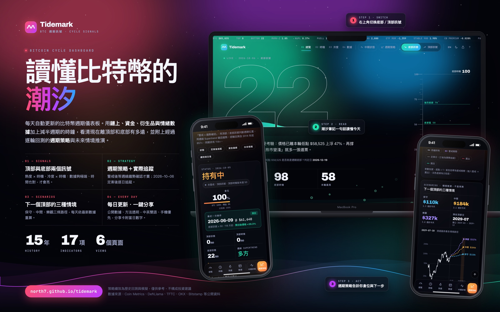
我負責的範圍：實作以 AI 協作工具完成，我扮演需求方、決策者與驗收者。
經典鏈上指標每輪頂部讀數都在下降（MVRV 4.7 → 4.4 → 2.9 → 2.3），固定門檻越來越晚觸發；中段高點又比真頂部更熱，只看「熱不熱」會在錯的時間發出警報。
長期持有比特幣、想知道週期走到哪裡的人；以及每天需要讀取數據寫日報的自動化流程（JSON 介面）。
頂部 = 數據夠極端 × 時間進入歷史窗口。兩者同時成立才發訊號，可以排除中段高點的誤報。
不接交易功能・不存任何個人持倉・第一版不用付費數據・不提供價格預測或機率
我把問題重新定義為「熱度與時間是否同時到位」，而不是「熱不熱」，並先寫下成功標準與不做的事，作為之後每個決策的依據。
| 決策點 | 考慮過的選項 | 選擇 | 理由與代價 |
|---|---|---|---|
| 訊號結構 | 只看熱度／熱度 × 時機 | 熱度 × 時機 | 只看熱度時中段高點比真頂部熱；代價是依賴四年週期延續，已列為已知限制 |
| 持有者行為數據 | 付費 CryptoQuant／免費 4 年數據／不納入 | 不納入 | 只有 4 年歷史無法跨週期驗證，試算讓頂部訊號變差，且授權禁止公開 |
| 中期功能形式 | 精準買賣訊號／狀態參考面板 | 參考面板 | 48 個指標研究顯示中期轉折沒有可靠指標，不做會誤導的訊號 |
| 策略績效呈現 | 只放回測／加上定案後追蹤 | 定案日＋實際追蹤 | 規則是看過歷史才挑的；設定定案日，讓產品接受未來數據檢驗 |
| 未來情境 | 單一預測線／三情境＋機率／三情境無機率 | 三情境、不給機率 | 樣本只有 3–4 次週期，機率會製造虛假的精確感 |
| 每日排程 | GitHub 排程／外部定時觸發 | 外部觸發＋備援 | 實測 GitHub 排程延遲約 5 小時，日報會讀到舊數據 |
| 資訊架構 | 中期放第 2 頁／獨立按鈕 | 獨立按鈕 | 01–04 都是頂底相關頁，中期不屬於頂底，混在中間會造成誤解 |
我選擇少一個功能，而不是多一個不可靠的功能；依證據強度調整功能承諾，也是產品決策的一部分。
我為產品訂了一條規則：任何新指標都要先用歷史頂部、底部與「假訊號」（中段高點、中段回調）檢驗，通過才上線。一共評估 48 個候選指標、約 10 種策略設計、700 多次回測。
後期把流程改成事先固定候選與參數再測試，避免看過結果才挑規則。大多數結論是「沒用」，這些負面結果和成功的一樣公開在產品說明裡。
| 測試內容 | 結果 | 決定 |
|---|---|---|
| 48 個免費指標的中期轉折辨識（2014–19 觀察、2020–26 檢驗） | 沒有指標能把最終頂部排在中段高點之上 | 保留現有結構 |
| Power Law 冪律趨勢價倍數 | 三次底部 0.24–0.48 倍、假底部無誤報；頂部倍數逐輪急降 | 加入底部 |
| Pi Cycle Top | 最近兩次頂部讀數與 2019 假頂相同 | 不採用 |
| 交易所淨流入 | 2021、2025 頂部為 0，資金改走 ETF 與託管 | 移除 |
| 長期持有者 SOPR、CDD（免費 4 年數據） | 2024-03 假頂 100 分、2025 真頂 48 分，讓頂部訊號變差 | 不採用 |
| Delta Price | 真假底部分得開，但與 MVRV 相關 0.67，加入後分辨力略降 | 只作參考 |
| 牛市內避開回調（7 種趨勢濾網） | 三次牛市全部輸給持有 | 不採用 |
| 回調加碼短線（4 種出場方式） | 2020 年後全部輸給任意日進場 | 不採用 |
| 類別 | 指標 | 計分方式 |
|---|---|---|
| 鏈上估值 | MVRV Z-score、NUPL、Puell Multiple、實現價格倍數 | 週期法：以過去四次頂部擬合遞減趨勢，推估本輪預期頂部 |
| 資金流與機構 | ETF 30 日淨流入、ETF 流入動能、穩定幣 90 日增速、Coinbase 溢價 | 4 年滾動百分位（歷史不足三輪） |
| 槓桿與衍生品 | 資金費率 7 日均、未平倉量／市值、期現基差 | 4 年滾動百分位 |
| 情緒 | 恐懼貪婪指數 7 日均 | 4 年滾動百分位 |
| 冷度（底部） | MVRV、NUPL、Puell、Hash Ribbons、AHR999、Power Law | 以過去三次底部擬合本輪預期底部；Hash Ribbons 依投降深度 |
同一類指標先平均再按權重加總，避免高度相關的指標重複計分；百分位 35 以下記 0 分，避免平常狀態被算成「半熱」。
flowchart LR
subgraph D[公開數據]
CM[Coin Metrics 鏈上]
ETF[TFTC ETF 資金流]
DL[DefiLlama 穩定幣]
EX[OKX・Binance・Coinbase 衍生品]
FG[恐懼貪婪]
BS[Bitstamp 日 K]
end
D --> IND[17 項指標]
IND --> H[熱度 0–100]
IND --> C[冷度 0–100]
CLK[減半與週期時鐘] --> T[時機]
CLK --> BT[底部時機]
H --> TS{{頂部訊號}}
T --> TS
C --> BSG{{底部訊號}}
BT --> BSG
TS --> ST[週期策略]
BSG --> ST
BS --> SUP[週線 Supertrend] --> ST
4 類指標加權，每日自動更新與 JSON 介面
發現：分數每年都會「鈍化」
加入減半與低點兩個時鐘
結果：三輪最終頂部都成為該輪最高
冷度 × 底部時機，週期結構驗證
回應：驗證 ETF 時代熊市是否變淺
品牌、雙語、四套視覺提案收斂成「極光潮汐」
回應：資訊太密、不好讀
48 指標研究後做成參考面板
決策：證據弱，不做成訊號
逐輪回測、模擬資金曲線、三種未來情境
回應：從「看懂」走到「怎麼做」
自動檢查、事件通知、流量統計、定案後追蹤
回應：無人值守也不出錯
潮汐筆記、手機長按、分享卡、時機說明
回應：使用回饋與走查
持有中，頂部訊號或頂部時機 ≥ 50，進入警戒並保持到賣出。
警戒中，週線 Supertrend（ATR 10 × 3）由多轉空，全部賣出。
空手時，底部訊號 ≥ 50 或週線 Supertrend 轉多，全部買回。
| 起點 | 策略 | 持有 | 策略 ÷ 持有 | 策略最大回撤 | 持有最大回撤 |
|---|---|---|---|---|---|
| 2014 | 857× | 114× | 7.5× | −74% | −84% |
| 2018 | 20.8× | 6.4× | 3.3× | −71% | −81% |
| 2022 | 5.5× | 1.8× | 3.1× | −35% | −67% |
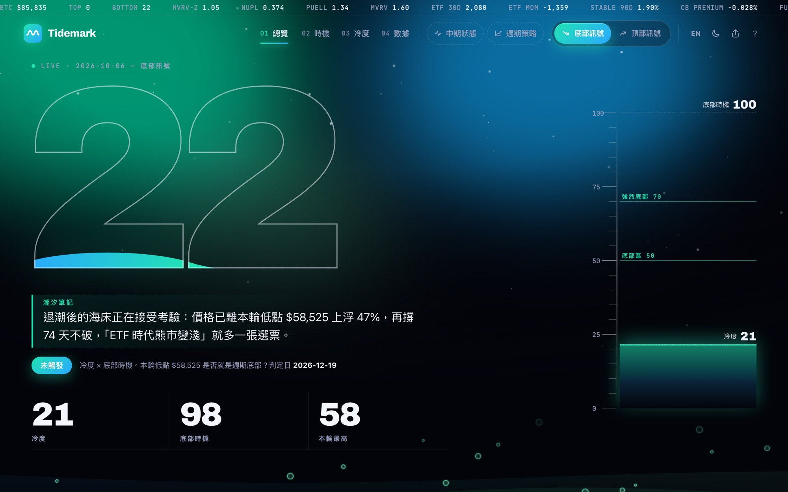
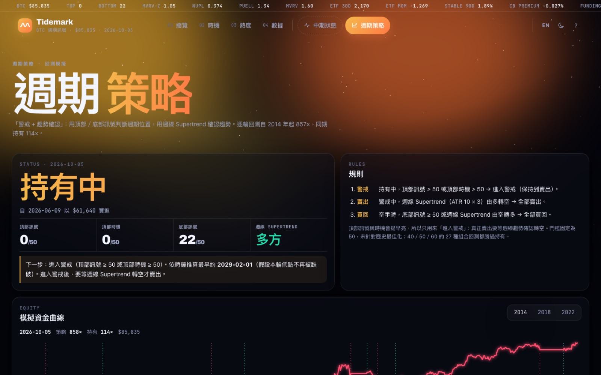
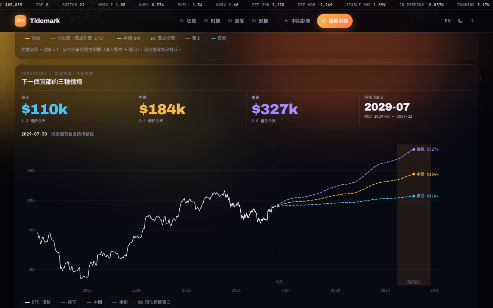
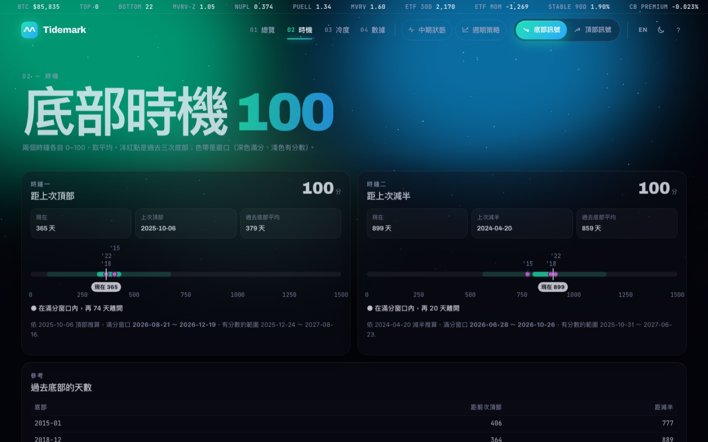
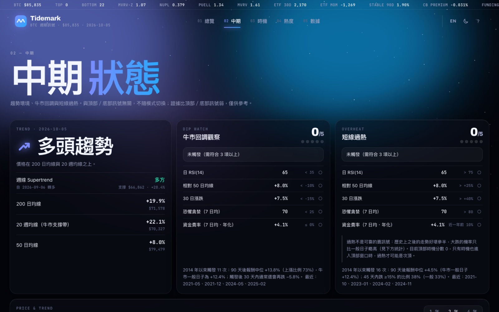
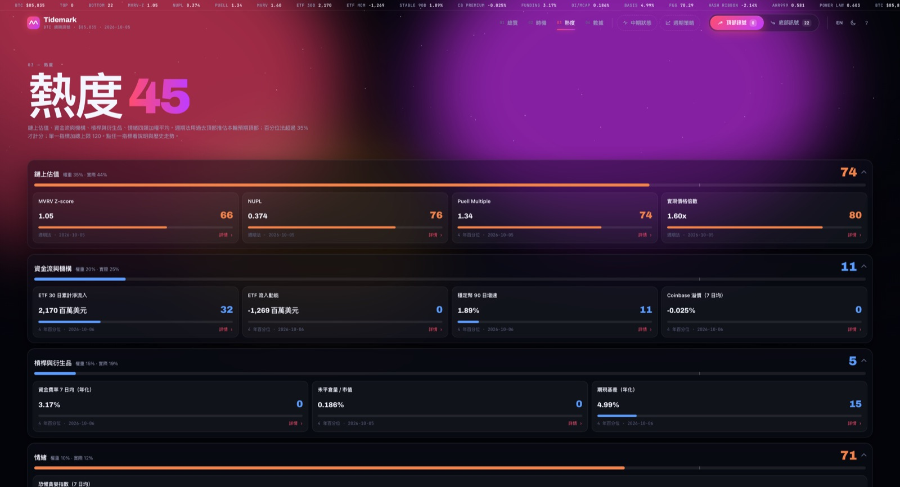
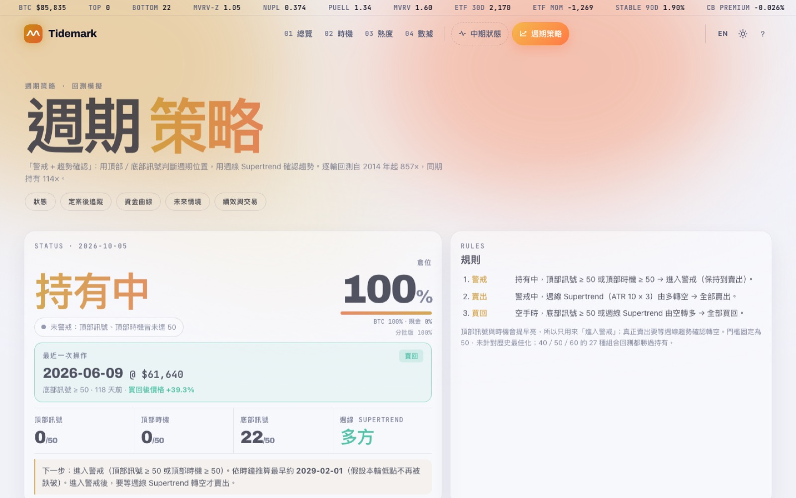
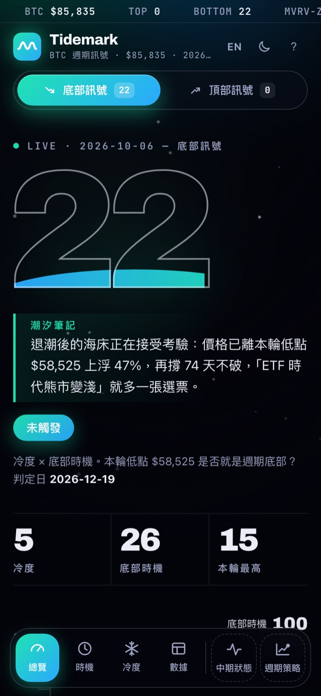
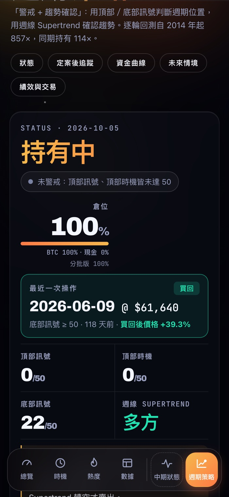
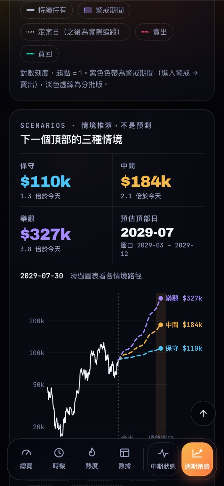
先做四套可互動的視覺提案，讓使用者實際操作後選擇偏好，再組合成最終方向：潮汐的動態波浪與刻度尺、極光的色調與氛圍、瑞士風的巨大數字與資訊秩序。四種模式各有專屬色彩，一眼就知道自己在看哪一類資訊。
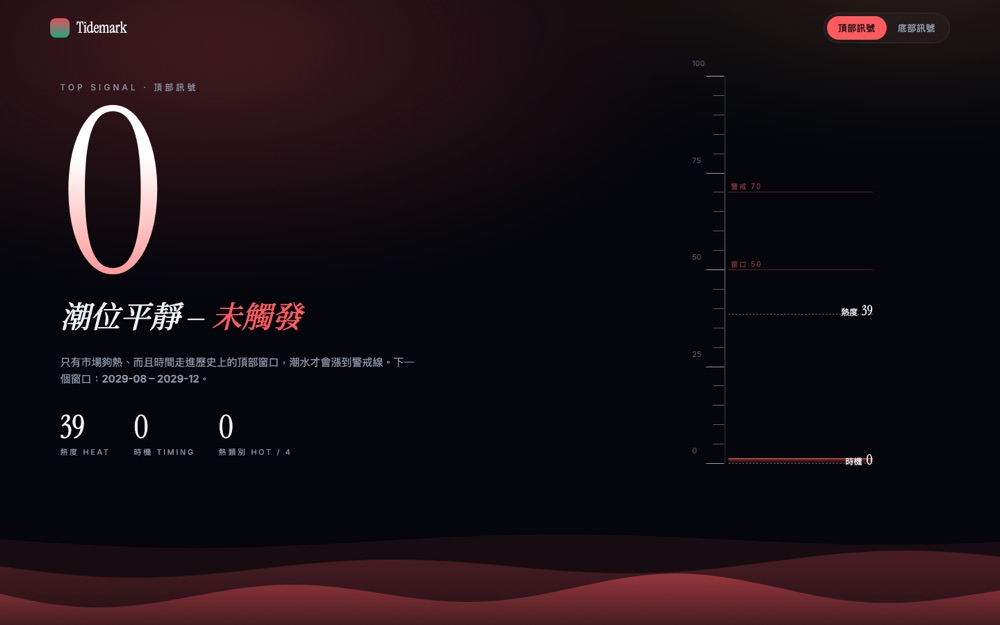
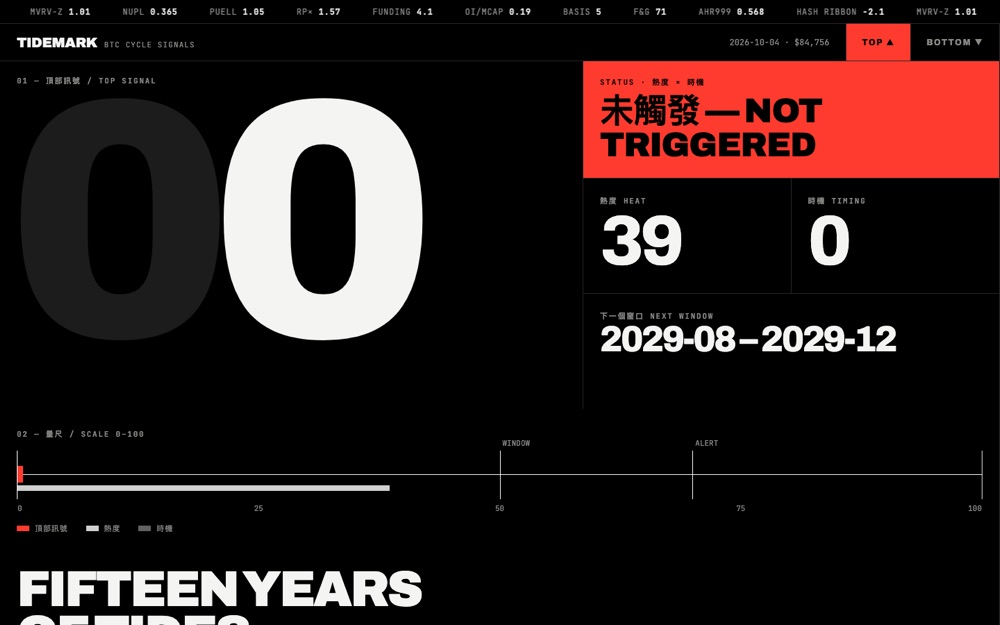
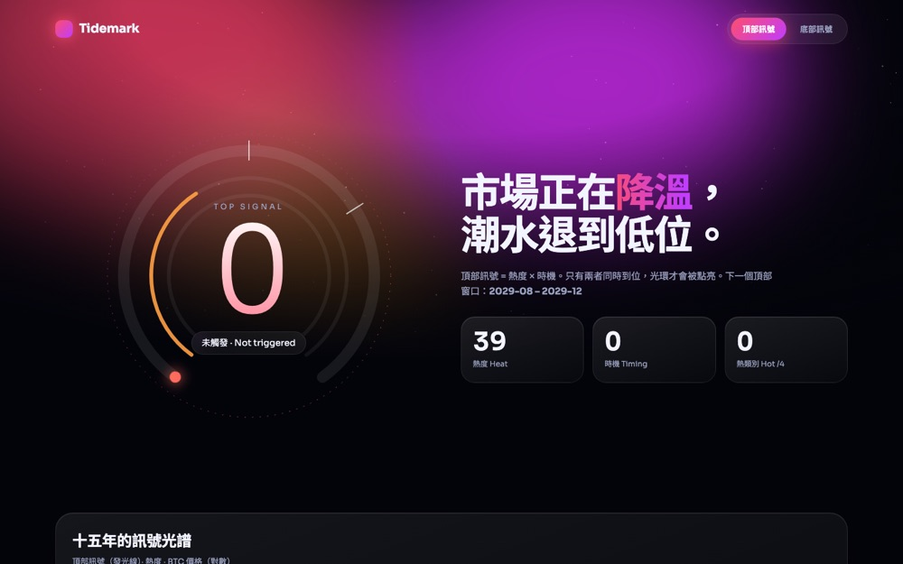
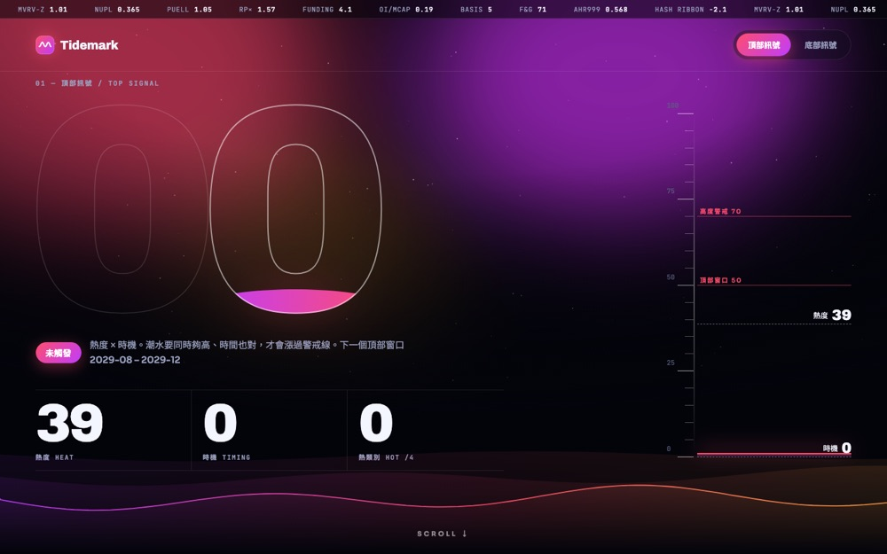
訊號分數用空心巨大數字呈現，裡面的「潮水」依分數漲到對應高度並持續晃動。
頂部模式是湍急的漲潮浪；底部模式是低緩的深海湧浪，加上從海底往上浮的氣泡。
依當天數據自動挑選句型，用一句話說明今天的狀態，只描述數據，不做預測。
flowchart TB CRON[cron-job.org
每天 UTC 00:15] --> GA[GitHub Actions] SCHED[GitHub 排程
備援，已更新就略過] -.-> GA GA --> RUN[run.py] RUN --> SRC[sources.py
抓取 8 個公開資料源
失敗時沿用舊資料並標記 stale] SRC --> SCO[scoring.py 熱度・冷度・時機] SCO --> STR[strategy.py 逐輪回測] SCO --> SCN[scenarios.py 三種情境] SCO --> MID[midterm.py 中期狀態] STR & SCN & MID --> OUT[latest.json・中英文頁面・og.png・CSV] OUT --> CHK{checks.py 自動檢查} CHK -- 通過 --> GIT[commit] --> PAGES[GitHub Pages 網站] CHK -- 失敗 --> STOP[停止更新・保留昨天的網站] OUT --> EV[events.py 偵測重要事件] --> LINE[LINE 通知] PAGES --> GC[GoatCounter 匿名流量統計]
Python（pandas、numpy、requests、Pillow）產生靜態 HTML；資料內嵌在頁面裡，沒有後端伺服器。
任一資料源失敗只標記舊資料、不中斷；自動檢查不通過就停止發布；發現平台排程延遲約 5 小時，改用外部準時觸發並保留備援。
文字寫成「中文｜English」成對標記，同一份程式輸出兩個語言版本，自動檢查英文頁沒有殘留中文。
| 成功指標 | 怎麼追蹤 |
|---|---|
| 數據準時 | 每天 UTC 00:15 更新，落後就標記舊資料 |
| 輸出正確 | 自動檢查不通過就停止發布 |
| 策略可信度 | 定案後績效與凍結情境逐日比對 |
| 使用情況 | 各分頁匿名造訪數（GoatCounter） |
| 風險 | 對策 |
|---|---|
| 資料源中斷或被擋 | 主要＋備援來源、沿用舊值並標記 |
| 過度擬合 | 逐輪回測、事先固定參數、定案日 |
| 數據授權 | 只用可公開的來源，不合授權者不上線 |
| 被當成投資建議 | 標示情境非預測、全站免責聲明 |
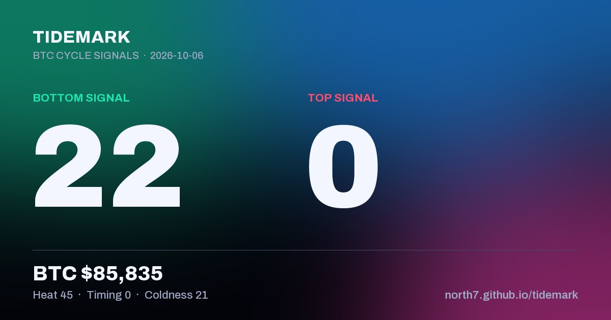